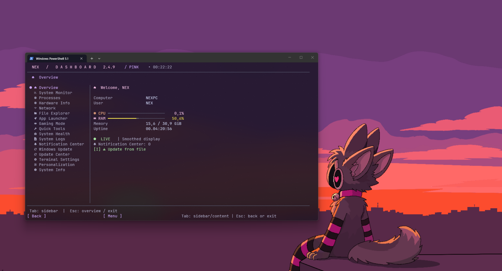

Live monitoring
CPU, GPU, memory, storage and network metrics with color-coded indicators.
NEX Dashboard brings live system monitoring, practical Windows tools and personal style together in one interactive PowerShell interface.
Public beta · Windows 11 · Free to download

Everything you need, without leaving the dashboard.
CPU, GPU, memory, storage and network metrics with color-coded indicators.
32 color options, custom accents, prompt styles, ASCII logos and Fastfetch layouts.
Arrange monitoring cards, hide the ones you don't need and choose your layout.
File explorer, app launcher, startup manager, system health and Windows Update.
Find sections with Ctrl+K, use mouse controls and open context help with F1.
Install compatible GitHub releases, enable built-in widgets and back up your settings.
Actual screenshots from the project. Open any image to see it full size.
Choose the EasyInstall ZIP from an official release.
Unpack the archive into a folder.
Run Install.cmd and follow the setup wizard. Review the installation prompts.
Already using NEX? Open Update Center to check for compatible releases.
Public beta: some features may not work on every PC. Run installers only from trusted sources.